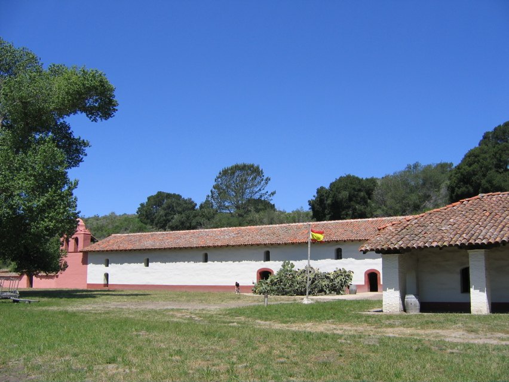

<--Previous Up Next-->

Mission La Purisima Concepción
California's most complete mission (rebuilt by the CCC in the 1950's) dwarfs Huxley and Penny. They're to the left of the enormous prickly pear cactus. But what Huxley really liked here was the field full of mole and gopher holes.